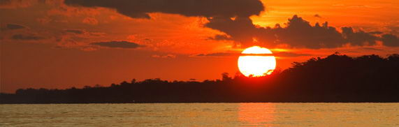
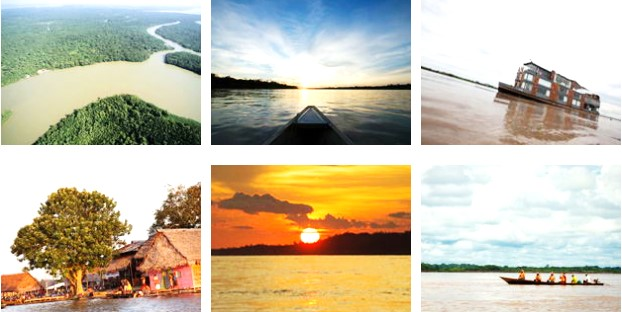

Río Amazonas

El Amazonas es considerado el río más caudaloso y largo del mundo que nace en las cumbres nevadas de la provincia de Caylloma, en el departamento de Arequipa.
Su cuenca hidrográfica es la más grande del mundo y le brinda vida a la Amazonía, la selva tropical más extensa del planeta y uno de los principales pulmones de la Tierra.
Sus aguas vierten al mar 170 mil metros cúbicos por segundo y alberga a más de 2 mil especies de peces. Además, es la vía de comunicación de los millones
de pobladores de la selva que navegan sobre sus aguas, sea en pequeñas embarcaciones llamadas peque peque o en barcos.Los turistas hoy en día disfrutan de
viajar por este profundo río con las mejores comodidades, mientras conocen más sobre la biodiversidad peruana. Ellos disfrutan de los lujosos cruceros que
navegan el río Amazonas y la asombrosa Reserva Nacional Pacaya Samiria, ubicada en la región de Loreto.
La ciudad de Iquitos es el principal punto de partida para recorrer el río Amazonas y visitar las reservas nacionales o albergues turísticos donde
se programan caminatas diurnas y nocturnas, paseos en bote, visita a comunidades de etnias boras, yahuas y witotos. También podrá cruzar los puentes
colgantes desde lo alto de árboles, subir a miradores turísticos y plataformas flotantes para tener una mejor vista panorámica del lugar.
Datos destacados
1. El Amazonas es el río más ancho
del mundo con 6 762 km de longitud. |
2. La creciente del río se da en los
meses de marzo, abril y mayo. |
3. Mamíferos como el manatí y el delfín
rosado habitan en el río Amazonas. |
4. Perú, Brasil y Colombia son los países que comprenden
el río Amazonas. |
Galeria de imágenes

|